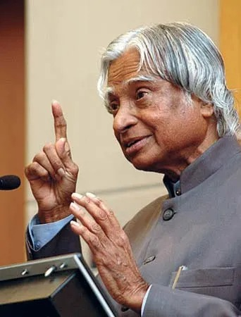

The Missile Man of India
1931 - 2015

Dr. Avul Pakir Jainulabdeen Abdul Kalam - Scientist, Visionary, and 11th President of India
Dr. Avul Pakir Jainulabdeen Abdul Kalam, popularly known as the "Missile Man of India" and "People's President," was born on October 15, 1931, in Rameswaram, Tamil Nadu. Coming from a humble background, he rose to become one of India's most distinguished scientists and the 11th President of India.
Despite financial difficulties in his childhood, young Kalam was a bright student with an insatiable curiosity for learning. He sold newspapers to support his family's income while pursuing his education. This early struggle shaped his character and instilled in him the values of hard work and perseverance.
Led development of India's first Satellite Launch Vehicle (SLV-III) and ballistic missiles like Agni and Prithvi
Chief Scientific Adviser during India's nuclear tests in 1998
Received India's highest civilian honor in 1997
Served as 11th President from 2002 to 2007
Authored inspirational books including "Wings of Fire"
Honorary doctorates from over 40 universities worldwide
"Dream is not that which you see while sleeping, it is something that does not let you sleep."
"You have to dream before your dreams can come true."
"If you want to shine like a sun, first burn like a sun."
"All of us do not have equal talent. But, all of us have an equal opportunity to develop our talents."
"Don't take rest after your first victory because if you fail in second, more lips are waiting to say that your first victory was just luck."
Dr. APJ Abdul Kalam's life story is a beacon of hope and inspiration for millions of Indians, including myself. What makes him truly remarkable is not just his scientific achievements, but his unwavering commitment to education, youth empowerment, and nation-building.
Despite becoming one of India's most celebrated scientists and serving as President, he remained incredibly humble and approachable. He never forgot his roots and always made time for students, believing that they were the future of the nation.
What I admire most is his simplicity and dedication to service. He lived a life of austerity, never owned property, and dedicated every moment to making India better. His passion for teaching never diminished - he spent his final moments inspiring young minds at IIM Shillong.